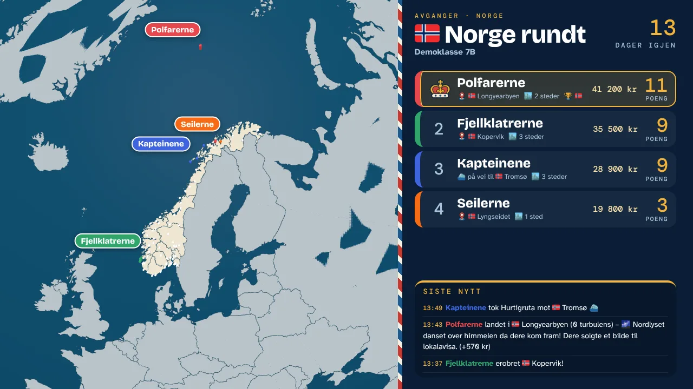

Nytt
Nytt
Samfunnsfag · ute
Erobre nabolaget
Lagene løser oppdrag rundt skolen og erobrer kartet bit for bit. Bevegelse, samarbeid og lokalkunnskap i ett.
Prøv detFra klasserommet, til klasserommet
Spill, simuleringer og hele læringsverdener for barneskolen. Laget av en lærer, testet i ekte klasserom – og gratis å bruke.
En hel klasseøkonomi: elevene tjener, sparer, handler og betaler skatt – med monstre, bankkort og klassens egen butikk.
Myntland har egne vilkår og egen personvernerklæring på myntland.no.

Prosjektene
NyttLagene løser oppdrag rundt skolen og erobrer kartet bit for bit. Bevegelse, samarbeid og lokalkunnskap i ett.
Prøv det
Gruppene reiser verden rundt med et stramt budsjett. Hvert land gir nye fakta, nye valg og nye regnestykker.
Prøv det
Samme spillmotor, men tettere på: hovedsteder, språk, parlør-diktater og valuta i hele Europa.
Prøv det
Reis Norge rundt med buss, tog, fly og Hurtigruta – eller sov i telt med allemannsretten. 72 steder fra Flekkefjord til Svalbard, og klassens eget hjemsted kan legges til.
Prøv det
Ti spill for klassen og for to og to: fra Slagskip og Fire på rad til Pizzabutikken og Livet på egne bein.
Se spillene På bestilling
På bestillingHar dere et tema dere vil gå i dybden på? Vi kan bygge en læringsverden til akkurat deres klasse.
Les mer
Simuleringer og samtaler om religion, livssyn og etikk – tilpasset mellomtrinnet.
Kommer snartSe det i bruk
Læreren styrer fra sin maskin, elevene spiller i grupper, og tavla viser hvor alle er akkurat nå.


Slik er det laget
Alt på Tavleloftet er laget av en lærer på mellomtrinnet på Karmøy. Ideene kommer fra klasserommet; selve koden er skrevet sammen med KI-verktøy.
Ingen elevkontoer. Elevene bruker kallenavn eller gruppenavn. Spilldata slettes automatisk når de ikke trengs lenger.
Noe som fungerer i klasserommet – eller noe som mangler.
Bygget raskt, så klassen kan prøve den samme uke.
Elevene finner feilene og kommer med de beste forslagene.
Når det fungerer, legges det ut her – gratis for andre lærere.
Hyllene på loftet

Store simuleringer som varer i flere uker: Jorda rundt, Europa rundt, Norge rundt og Erobre nabolaget.

Korte spill for hele klassen eller to og to. Klare til bruk uten forberedelser.

En læringsverden bygget rundt deres tema, deres sted og deres elever.
 Kommer
KommerSmå hjelpere for hverdagen: PDF-komprimering, timeplaner og utskriftshefter.